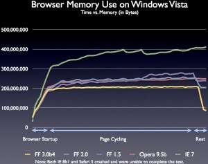
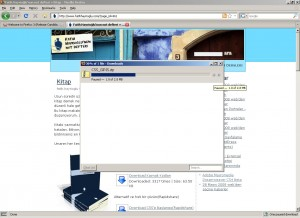
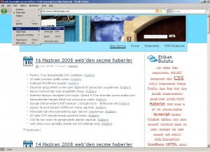
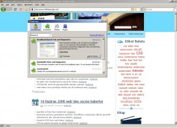

İnternet Tarayıcı savaşları kızıştı. Geçen hafta Opera 9.5 tanıttık burada. Şimdi sıra Firefox 3.0'de. Normal kullanıcı ve web kodlayıcılarını sevindiren sürümler bunlar. Bir çok yeni özellik ve araç ile daha kullanışlı ve etkin tarayıcılar bizlerin hizmetine sunuluyor. Sırada Microsoft Internet Explorer var, ama Microsoft 8.0 sürümünün Ağustos ayında yayınlayacağına dair bilgiler dolaşıyor, yani biraz daha bekliyeceğiz.
Firefox 3 özelliklerine bir göz atalım;
Hız ve Bellek Kullanım Oranları
[][]
Firefox’un en büyük dezavantajı bence, Bellek kullanım oranlarının çok yüksek seyretmesi idi. Ama Firefox 3 ile bunu minimum seviyelere düşürmüşler diyebilirim. Opera her ne kadar bu alanda birinciliğini koruyor olsa da Firefox 3'de azınsanmayacak kadar iyi. Firefox 2'ye göre %25'lik bir iyileşme olmuş.
Adres Çubuğu ve Favoriler
[][]
Yenilenen adres çubuğu ile internet sitelerine ulaşmak daha kolay. Gezdiğimiz internet sitelerini favorilerimize eklemek ve etiketlemek çok kolay. Etiketlediğimiz sitelere adres çubuğundan sadece adresi ve adresinde geçen kelimelerin yanır sıra etiketleri ile de erişebiliyoruz.
Bu özellik Opera 9.5'de var, ancak Firefox 3 bizraz daha geliştirmiş adres çubuğunu. Bu özellik kullanıcıya çok büyük kolaylık sağlıyor.
Güvenlik: Site Hakkında Bilgi
[][]
Adres çubuğunun yanında favori ikon bölümünde site hakkında uyarılar yer alıyor. Bu uyarılar sayesinde kullanıcı sitenin kendisi için zararlı mı değil olduğunu anlıyor. Oltalama yöntemi ile kullanıcıyı kandırmaya çalışınalar için güzel bir önlem. Ayrıca zararlı içerikler içinde ayrıca bir önlem alınmış durumda.
Dosya İndirme
[][]
Firefox’un baştan beri çok ihmal ettiği dosya indirme kısmına çok güzel özellikler ekleyerek bu açığını da kapattığını görüyoruz. Dosya indirirken durdurabiliyor ve devam edebiliyor, indirdiğimiz dosyanın yolunu kopyalaya biliyor, artı olarak bir dosya indirirken tarayıcınızı kapatırsanız, tarayıcınızı yeniden açtığınızda indirme işlemi kaldığınız yerden devam edebiliyoruz. Son olarakta indirme ekranında arama yapabiliyoruz.
Tüm Siteyi Yakınlaştırma Özelliği
[][]
Daha önceki sürümlerde yakınlaştırma yapınca sadece metinleri büyüten Firefox yeni sürüm ile birlikte artık sayfanın tüm öğelerini yakınlaştırıp uzaklaştırma yapabiliyoruz.
Her Sayfaya ayrı ayrı yetki tanımı
[][]
Firefox 3 ile birlikte artık genel bir güvenlik tanımı yapmak yerine her sayfa ve siteye ayrı ayrı güvenlik ayarları tanımı yapabiliyoruz.
Eklentiler Penceresi
[][]
Eklentiler penceresi daha kullanışlı ve özellikleri daha fazla. Artık eklenti penceresinden siteye gitmeden ekletileri arayabiliyoruz, hakkında bilgi alabiliyoruz, indirip kurabiliyoruz.
CSS özelliklerinde düzeltmeler
CSS yorumlama konusunda gayet iyi sonuçlar veren Firefox3'ün sürüm ile birlikte daha önce eksik kalan özellikleri ekleyip tam bir CSS desteği sunuyor. CSS3 desteği henüz sunmasada biz Firefox'dan memnunuz. CSS3.0 desteği Firefox3.1 ve Firefox 4.0 ile birlikte geleceği konuşuluyor.
Fiefox3'ün desteklediği yeni CS özelliklerinde göze çarpanlar; inline-block ve inline-table, tüm platformlarda font-size-adjust desteği, :default pseudo-class, HTML soft hyphens (), ime-mode özelliği, white-space'in pre-wrap değeri, ve :first-child, :only-child, :last-child ve :empty desteği sunuyor.
Şifre Yönetimi
Firefox 3.0 geliştiriciler bu sefer bayağı bir kullanıcı taraflı düzeltmeler yapmışlar bunlardan biri de şifre yönetimi. Eski versiyonlardaki yanlış şifreleri hafızada tutmak yerine sadece doğru şifreleri hafızasında tutarak bizlere kolaylık sağlıyor.
Diğer Özellikler
Bunu haricinde Renk profili desteği, Geçmiş penceresinde yenilikler, haraketli PNG desteği, metin ve yazı tipi yorumlamada iyileştirmeler, Mikroformat tanıma, Çevirimdışı uygulama kullanma olanağı, Adres çubuğunda utf-8 desteği,birden fazla yazı bloğu seçme imkanı, daha hızlı arama, Mevcut oturumu kaydetme özelliği, yenilenen tab alanı, tema gibi bir çok yenilikler Firefox 3 kullanıcılarını bekliyor.
Sonuç
Firefox 3.0 ile Mozilla firması kullanıcıları çok iyi tahlil edip(15.000'den fazla sorunu giderdiğini de unutmayalım) eksik ve aksak yönler çok iyi geliştirmiş. Bizlere gayet kullanışlı ve hızlı bir Tarayıcı sunmuş. Benim ilk gördüğüm eksisi daha FireBug ekletisinin bu sürüm için çıkmamış olması. Onun haricinde Firefox, bir çok yeniliklerle bizi kendine hayran bırakmaya devam ediyor.
Ben bu yazıyı bir gün öceden yazmıştım ve bugün yayına aldım. Firefox çok güzelde bir bilgilendirme yapmış. http://www.mozilla-europe.org/tr/firefox/features/
- http://www.mozilla.com/en-US/firefox/3.0rc2/releasenotes/
- http://www.dria.org/wordpress/archives/2008/06/12/655/
- http://www.infoworld.com/article/08/05/27/five-things-you-will-love-about-Firefox-3_1.html
- http://people.mozilla.com/~beltzner/overview-of-firefox3.swf
- http://blog.mozilla.com/faaborg/2007/06/01/the-user-interface-of-firefox-3-features/
- http://download.chip.eu/en/Top-10-Firefox-3-Features_2092548.html?tab=5&show=1
- http://lifehacker.com/software/screenshot-tour/first-look-at-firefox-30-319968.php
- http://developer.mozilla.org/en/docs/Firefox_3_for_developers
- http://fotoanaliz.hurriyet.com.tr/galeridetay.aspx?cid=12563&p=2&rid=4369
- http://www.gezginturk.net/icerik-274-firefox-3-ve-yenilikleri.html
[]: /images/browser_memory_test1.jpg []: /images/adres_cubug.jpg []: /images/site_tani.jpg []: /images/indir.jpg []: /images/yakinlastir.jpg []: /images/yetki.jpg []: /images/eklentiler.jpg
Yorumlar !